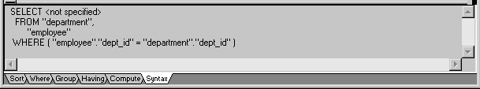
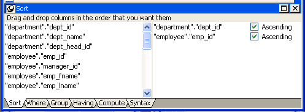
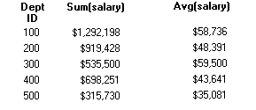
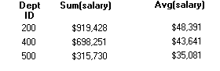

In specifying data for a DataWindow object, you have more options for specifying complex SQL statements when you use SQL Select as the data source. When you choose SQL Select, you go to the SQL Select painter, where you can paint a SELECT statement that includes the following:
 Saving your work as a query While in the SQL Select painter, you can save the current SELECT statement as
a query by selecting File>Save As from the menu bar. Doing
so allows you to easily use this data specification again in other DataWindows.
Saving your work as a query While in the SQL Select painter, you can save the current SELECT statement as
a query by selecting File>Save As from the menu bar. Doing
so allows you to easily use this data specification again in other DataWindows.
 To define the data using SQL Select:
To define the data using SQL Select:
Click SQL Select in the Choose Data Source dialog box in the wizard and click Next.
The Select Tables dialog box displays.
Select the tables and/or views that you will use in the DataWindow object.
For more information, see "Selecting tables and views".
Select the columns to be retrieved from the database.
For more information, see "Selecting columns".
Join the tables if you have selected more than one.
For more information, see "Joining tables".
Select retrieval arguments if appropriate.
For more information, see "Using retrieval arguments".
Limit the retrieved rows with WHERE, ORDER BY, GROUP BY, and HAVING criteria, if appropriate.
For more information, see "Specifying selection, sorting, and grouping criteria".
If you want to eliminate duplicate rows, select Distinct from the Design menu. This adds the DISTINCT keyword to the SELECT statement.
Click the Return button on the PainterBar.
You return to the wizard to complete the definition of the DataWindow object.
After you have chosen SQL Select, the Select Tables dialog box displays in front of the Table Layout view of the SQL Select painter. What tables and views display in the dialog box depends on the DBMS. For some DBMSs, all tables and views display, whether or not you have authorization. Then, if you select a table or view you are not authorized to access, the DBMS issues a message.
For ODBC databases, the tables and views that display depend on the driver for the data source. Adaptive Server Anywhere does not restrict the display, so all tables and views display, whether or not you have authorization.
 To select the tables and views:
To select the tables and views:
Representations of the selected tables and views display. You can move or size each table to fit the space as needed.
Below the Table Layout view, several tabbed views also display by default. You use the views (for example, Compute, Having, Group) to specify the SQL SELECT statement in more detail. You can turn the views on and off from the View menu on the menu bar.

You can display the label and datatype of each column in the tables (the label information comes from the extended attribute system tables). If you need more space, you can choose to hide this information.
 To hide or display comments, datatypes, and labels:
To hide or display comments, datatypes, and labels:
Position the pointer on any unused area of the Table Layout view and select Show from the pop-up menu.
A cascading menu displays.
Select or clear Datatypes, Labels, or Comments as needed.
The colors used by the SQL Select painter to display the Table Layout view background and table information are specified in the Database painter. You can also set colors for the text and background components in the table header and detail areas.
For more information about specifying colors in the Database painter, see "Modifying database preferences".
You can add tables and views to your Table Layout view at any time.
You can also remove individual tables and views from the Table Layout view, or clear them all at once and begin selecting a new set of tables.
If you select more than one table in the SQL Select painter, PowerBuilder joins columns based on their key relationship.
For information about joins, see "Joining tables".
You can click each column you want to include from the table representations in the Table Layout view. PowerBuilder highlights selected columns and places them in the Selection List at the top of the SQL Select painter.
 To reorder the selected columns:
To reorder the selected columns:
Drag a column in the Selection List with the mouse. Release the mouse button when the column is in the proper position in the list.
 To select all columns from a table:
To select all columns from a table:
Move the pointer to the table name and select Select All from the pop-up menu.
 To include computed columns:
To include computed columns:
Click the Compute tab to make the Compute view available (or select View>Compute if the Compute view is not currently displayed).
Each row in the Compute view is a place for entering an expression that defines a computed column.
substr("employee"."emp_fname",1,2)
You can display the pop-up menu for any row in the Compute view. Using the pop-up menu, you can select and paste the following into the expression:
Press the Tab key to get to the next row to define another computed column, or click another tab to make additional specifications.
PowerBuilder adds the computed columns to the list of columns you have selected.
Computed columns you define in the SQL Select painter are added to the SQL statement and used by the DBMS to retrieve the data. The expression you define here follows your DBMS's rules.
You can also choose to define computed fields, which are created and processed dynamically by PowerBuilder after the data has been retrieved from the DBMS. There are advantages to doing this. For example, work is offloaded from the database server, and the computed fields update dynamically as data changes in the DataWindow object. (If you have many rows, however, this updating can result in slower performance.) For more information, see Chapter 19, "Enhancing DataWindow Objects ."
As you specify the data for the DataWindow object in the SQL Select painter, PowerBuilder generates a SQL SELECT statement. It is this SQL statement that will be sent to the DBMS when you retrieve data into the DataWindow object. You can look at the SQL as it is being generated while you continue defining the data for the DataWindow object.
 To display the SQL statement:
To display the SQL statement:
Click the Syntax tab to make the Syntax view available, or select View>Syntax if the Syntax view is not currently displayed.
You may need to use the scroll bar to see all parts of the SQL SELECT statement. This statement is updated each time you make a change.
Instead of modifying the data source graphically, you can directly edit the SELECT statement in the SQL Select painter.
 Converting from syntax to graphics If the SQL statement contains
unions or the BETWEEN operator, it may not be possible
to convert the syntax back to graphics mode. In general, once you convert
the SQL statement to syntax,
you should maintain it in syntax mode.
Converting from syntax to graphics If the SQL statement contains
unions or the BETWEEN operator, it may not be possible
to convert the syntax back to graphics mode. In general, once you convert
the SQL statement to syntax,
you should maintain it in syntax mode.
 To edit the SELECT statement:
To edit the SELECT statement:
Select Design>Convert to Syntax from the menu bar.
PowerBuilder displays the SELECT statement in a text window.
Edit the SELECT statement.
Do one of the following:
If the DataWindow object will contain data from more than one table, you should join the tables on their common columns. If you have selected more than one table, PowerBuilder joins columns according to whether they have a key relationship:
PowerBuilder links joined tables in the SQL Select painter Table Layout view. PowerBuilder joins can differ depending on the order in which you select the tables, and sometimes the PowerBuilder best-guess join is incorrect, so you may need to delete a join and manually define a join.
 To delete a join:
To delete a join:
Click the join operator connecting the tables.
The Join dialog box displays.
Click Delete.
 To join tables:
To join tables:
Click the Join button in the PainterBar.
Click the columns on which you want to join the tables.
To create a join other than an equality join, click the join operator in the Table Layout view.
The Join dialog box displays:

Select the join operator you want and click OK.
If your DBMS supports outer joins, outer join options also display in the Join dialog box.
All PowerBuilder database interfaces provide support for ANSI SQL-92 outer join SQL syntax generation. PowerBuilder supports both left and right outer joins in graphics mode in the SQL Select painter, and full outer and inner joins in syntax mode. Depending on your database interface, you might need to set the OJSyntax DBParm to enable ANSI outer joins. For more information, see OJSyntax in the online Help.
.
The syntax for ANSI outer joins is generated according to the following BNF (Backus Naur form):
OUTER-join ::=
table-reference {LEFT | RIGHT} OUTER JOIN table-reference ON search-condition
table-reference ::=
table_view_name [correlation_name] | OUTER-join
In ANSI SQL-92, when nesting joins, the result of the first outer join (determined by order of ON conditions) is the operand of the outer join that follows it. In PowerBuilder, an outer join is considered to be nested if the table-reference on the left of the JOIN has been used before within the same outer join nested sequence.
The order of evaluation for ANSI syntax nested outer joins is determined by the order of the ON search conditions. This means that you must create the outer joins in the intended evaluation order and add nested outer joins to the end of the existing sequence, so that the second table-reference in the outer join BNF above will always be a table_view_name.
For example, if you create a left outer join between a column in Table1 and a column in Table2, then join the column in Table2 to a column in Table3, the product of the outer join between Table1 and Table2 is the operand for the outer join with Table3.
For standard database connections, the default generated syntax encloses the outer joins in escape notation {oj ...} that is parsed by the driver and replaced with DBMS-specific grammar:
SELECT Table1.col1, Table2.col1, Table3.col1
FROM {oj {oj Table1 LEFT OUTER JOIN Table2 ON Table1.col1 = Table2.col1}
LEFT OUTER JOIN Table3 ON Table2.col1 = Table3.col1}
Table references are considered equal when the table names are equal and there is either no alias (correlation name) or the same alias for both. Reusing the operand on the right is not allowed, because ANSI does not allow referencing the table_view_name twice in the same statement without an alias.
When you create a join condition, the table you select first in the painter is the left operand of the outer join. The table that you select second is the right operand. The condition you select from the Joins dialog box determines whether the join is a left or right outer join.
For example, suppose you select the dept_id column in the employee table, then select the dept_id column in the department table, then choose the following condition:
employee.dept_id = department.dept_id and rows from department that have no employee
The syntax generated is:
SELECT employee.dept_id, department.dept_id
FROM {oj "employee" LEFT OUTER JOIN "department" ON "employee"."dept_id" = "department"."dept_id"}
If you select the condition with rows from department that have no employee, you create a right outer join instead.
 Equivalent statements The syntax generated when you select table A then
table B and create a left outer join is equivalent
to the syntax generated when you select table B then table A and
create a right outer join.
Equivalent statements The syntax generated when you select table A then
table B and create a left outer join is equivalent
to the syntax generated when you select table B then table A and
create a right outer join.
For more about outer joins, see your DBMS documentation.
If you know which rows will be retrieved into the DataWindow object at runtime—that is, if you can fully specify the SELECT statement without having to provide a variable—you do not need to specify retrieval arguments.
If you decide later that you need arguments, you can return to the SQL Select painter to define the arguments.
 Defining retrieval arguments in the DataWindow painter You can select View>Column Specifications from the
menu bar. In the Column Specification view, a column of check boxes
next to the columns in the data source lets you identify the columns
users should be prompted for. This, like the Retrieval Arguments
prompt, calls the Retrieve method.
Defining retrieval arguments in the DataWindow painter You can select View>Column Specifications from the
menu bar. In the Column Specification view, a column of check boxes
next to the columns in the data source lets you identify the columns
users should be prompted for. This, like the Retrieval Arguments
prompt, calls the Retrieve method.
If you want the user to be prompted to identify which rows to retrieve, you can define retrieval arguments when defining the SQL SELECT statement. For example, consider these situations:
 To define retrieval arguments:
To define retrieval arguments:
In the SQL Select painter, select Design>Retrieval Arguments from the menu bar.
Enter a name and select a datatype for each argument.
You can enter any valid SQL identifier for the argument name. The position number identifies the argument position in the Retrieve method you code in a script that retrieves data into the DataWindow object.
Click Add to define additional arguments as needed and click OK when done.
You can specify an array of values as your retrieval argument. Choose the type of array from the Type drop-down list in the Specify Retrieval Arguments dialog box. You specify an array if you want to use the IN operator in your WHERE clause to retrieve rows that match one of a set of values. For example:
SELECT * from employee
WHERE dept_id IN (100, 200, 500)
retrieves all employees in department 100, 200, or 500. If you want your user to specify the list of departments to retrieve, you define the retrieval argument as a number array (such as 100, 200, 500).
In the code that does the retrieval, you declare an array and reference it in the Retrieve method, as in:
int x[3]
// Now populate the array with values
// such as x[1] = sle_dept.Text, and so on,
// then retrieve the data, as follows.
dw_1.Retrieve(x)
PowerBuilder passes the appropriate comma-delimited list to the method (such as 100, 200, 500 if x[1] = 100, x[2] = 200, and x[3] = 500 ).
When building the SELECT statement, you reference the retrieval arguments in the WHERE or HAVING clause, as described in the next section.
In the SELECT statement associated with a DataWindow object, you can add selection, sorting, and grouping criteria that are added to the SQL statement and processed by the DBMS as part of the retrieval.
 Dynamically selecting, sorting, and grouping data Selection, sorting, and grouping criteria that you define
in the SQL Select painter are added to the SQL statement
and processed by the DBMS as part of the retrieval. You can also
define selection, sorting, and grouping criteria that are created
and processed dynamically by PowerBuilder after data
has been retrieved from the DBMS.
Dynamically selecting, sorting, and grouping data Selection, sorting, and grouping criteria that you define
in the SQL Select painter are added to the SQL statement
and processed by the DBMS as part of the retrieval. You can also
define selection, sorting, and grouping criteria that are created
and processed dynamically by PowerBuilder after data
has been retrieved from the DBMS.
If you have defined retrieval arguments, you reference them in the WHERE or HAVING clause. In SQL statements, variables (called host variables) are always prefaced with a colon to distinguish them from column names.
For example, if the DataWindow object is retrieving all rows from the Department table where the dept_id matches a value provided by the user at runtime, your WHERE clause will look something like this:
WHERE dept_id = :Entered_id
where Entered_id was defined previously as an argument in the Specify Retrieval Arguments dialog box.
 Referencing arrays Use the IN operator and reference the retrieval
argument in the WHERE or HAVING clause.
Referencing arrays Use the IN operator and reference the retrieval
argument in the WHERE or HAVING clause.
"employee.dept_id" IN (:deptarray)You need to supply the parentheses yourself.
You can limit the rows that are retrieved into the DataWindow object by specifying selection criteria that correspond to the WHERE clause in the SELECT statement.
For example, if you are retrieving information about employees, you can limit the employees to those in Sales and Marketing, or to those in Sales and Marketing who make more than $50,000.
 To define WHERE criteria:
To define WHERE criteria:
Click the Where tab to make the Where view available (or select View>Where if the Where view is not currently displayed).
Each row in the Where view is a place for entering an expression that limits the retrieval of rows.
Click in the first row under Column to display columns in a drop-down list, or select Columns from the pop-up menu.
Select the column you want to use in the left-hand side of the expression.
The equality (=) operator displays in the Operator column.
 Using a function or retrieval argument in the expression To use a function, select Functions from the pop-up menu and
click a listed function. These are the functions provided by the
DBMS.
Using a function or retrieval argument in the expression To use a function, select Functions from the pop-up menu and
click a listed function. These are the functions provided by the
DBMS.
(Optional) Change the default equality operator.
Enter the operator you want, or click to display a list of operators and select an operator.
Under Value, specify the right-hand side of the expression. You can:
Continue to define additional WHERE expressions as needed.
For each additional expression, select a logical operator (AND or OR) to connect the multiple boolean expressions into one expression that PowerBuilder evaluates as true or false to limit the rows that are retrieved.
Define sorting (Sort view), grouping (Group view), and limiting (Having view) criteria as appropriate.
Click the Return button to return to the DataWindow painter.
You can sort the rows that are retrieved into the DataWindow object by specifying columns that correspond to the ORDER BY clause in the SELECT statement.
For example, if you are retrieving information about employees, you can sort on department, and then within each department, you can sort on employee ID.
 To define ORDER BY criteria:
To define ORDER BY criteria:
Click the Sort tab to make the Sort view available (or select View>Sort if the Sort view is not currently displayed).
The columns you selected display in the order of selection. You might need to scroll to see your selections.
Drag the first column you want to sort on to the right side of the Sort view.
This specifies the column for the first level of sorting. By default, the column is sorted in ascending order. To specify descending order, clear the Ascending check box.
Continue to specify additional columns for sorting in ascending or descending order as needed.
You can change the sorting order by dragging the selected column names up or down. With the following sorting specification, rows will be sorted first by department name, then by employee ID:

Define limiting (Where view), grouping (Group view), and limiting groups (Having view) criteria as appropriate.
Click the SQL Select button to return to the DataWindow painter.
You can group the retrieved rows by specifying groups that correspond to the GROUP BY clause in the SELECT statement. This grouping happens before the data is retrieved into the DataWindow object. Each group is retrieved as one row into the DataWindow object.
For example, if in the SELECT statement you group data from the Employee table by department ID, you will get one row back from the database for every department represented in the Employee table. You can also specify computed columns, such as total and average salary, for the grouped data. This is the corresponding SELECT statement:
SELECT dept_id, sum(salary), avg(salary)
FROM employee
GROUP BY dept_id
If you specify this with the Employee table in the EAS Demo DB, you get five rows back, one for each department.

For more about GROUP BY, see your DBMS documentation.
 To define GROUP BY criteria:
To define GROUP BY criteria:
Click the Group tab to make the Group view available (or select View>Group if the Group view is not currently displayed).
The columns in the tables you selected display in the left side of the Group view. You might need to scroll to see your selections.
Drag the first column you want to group onto the right side of the Group view.
This specifies the column for grouping. Columns are grouped in the order in which they are displayed in the right side of the Group view.
Continue to specify additional columns for grouping within the first grouping column as needed.
To change the grouping order, drag the column names in the right side to the positions you want.
Define sorting (Sort view), limiting (Where view), and limiting groups (Having view) criteria as appropriate.
Click the Return button to return to the DataWindow painter.
If you have defined groups, you can define HAVING criteria to restrict the retrieved groups. For example, if you group employees by department, you can restrict the retrieved groups to departments whose employees have an average salary of less than $50,000. This corresponds to:
SELECT dept_id, sum(salary), avg(salary)
FROM employee
GROUP BY dept_id
HAVING avg(salary) < 50000
If you specify this with the Employee table in the EAS Demo DB, you will get three rows back, because there are three departments that have average salaries less than $50,000.

 To define HAVING criteria:
To define HAVING criteria:
Click the Having tab to make the Having view available (or select View>Having if the Having view is not currently displayed).
Each row in the Having view is a place for entering an expression that limits which groups are retrieved. For information on how to define criteria in the Having view, see the procedure in "Defining WHERE criteria".